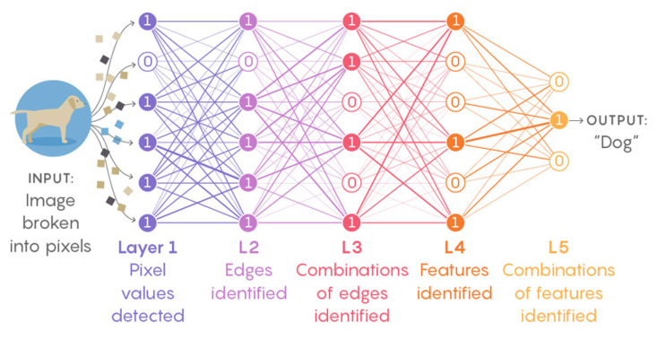

Why Neural Networks Work So Well


Machine learning and deep learning (a subset of machine learning ) are everywhere. In the last 10 years, we got self-driving cars, algorithms that understand language better than humans, machines that beat world champions on the Go game. The big question still stands: why such systems work so well ? There is no underlying principle that is guiding data scientists when building such algorithms, apart from an inspiration coming from our big humain brain. However, as a physicist, I do believe that principles should be at the core of such constructs, as that would allow to have more reliable and transparent systems. Those two things, reliability and transparency, must be of the uttermost importance for a society that is pilling up algorithms that are becoming central in our every day lifes (yes, healthcare is a big topic of innovation in AI)
What's a Neural Network
What are neural networks anyway? Deep learning and neural networks seem to be a new (and trendy) topic, but they are actually old, with the first model dating back to 1943 [McCulloch and Pitts]. It all started with a simple linear regression: $$f(x) = \sum_i x_i w_i$$ These rudimentary models would have the weights $w_1, \cdots, w_n$ adjusted by a human for a set of n inputs $x_1,\cdots,x_n$. Rosenblatt in 1958 [Rosenblatt] was the first to introduced the concept of learnable weights through examples coming from the data, the so called perceptron. Therefore, the perceptron is a model that learns to associate a bunch of inputs $x_i$ to a target $y$. Ideally, we have that $f(x)=y$, even though most of the time that will not happen, because there is always some inherent noise in the data that the learned function cannot capture.
Once we understood exactly the perceptron, then neural networks are just a more general framework. Indeed, the perceptron only captures linear dependencies between the inputs and the output. A simple way to add non-linearities is to apply an activation function to $f(x)$, e.g. $$ \sigma(x) = \frac{1}{1+\text{e}^{-x}}. $$
Such activation function is called sigmoid, but it is a choice among many others. ReLU, Tanh and many others are also widely used. Those functions are called activation functions because the perceptron can be perceived as one neuron that will or not be activated by the inputs. Indeed, with our perceptron we can try to predict a continuous target or try to classify a binary signal, cancer/no cancer, for example.
You might even be more ambitious and consider the perceptron after applying the activation function as the input of another perceptron, i.e. mathematically speaking: $$ g(x) = \sum_j \sigma_j\left(f(x)\right) v_j $$ where $v_j$ corresponds to the weights of the new perceptron layer. This normally allows for even more representational power, as you are putting together small bits of abstractions into larger ones. You might end up with something pretty complex depending on the number of times you combine low-level abstractions. When you actually stack several of those layers together, you are constructing deep neural networks.
Data scientists have a way to represent a deep neural network through a diagram that associates the inputs to the output(s). A four layer neural network might be represented by the following diagram.
 Figure 1. Neural Network with four layers that create different sort of features that will be descriminative to finally be able to classify correctly the animal in an image. (Image source: QuantaMagazine 2017)
The Definitions
Now that we have put together the essential building blocks of what is a neural network (weights, neurons/perceptrons, activation functions), we can attempt to answer the initial question. The first thing to notice is that a neural network, when it classifies an image through the constructions of different features, it is actually building an internal representation of the distribution of values that differ between one image and the other. Once that work is done, a classification becomes a trivial exercise. Therefore, the neural networks mainly works with distributions. Before digging into further details, let's first define certain central elements.
One of the principal tasks that neural networks are doing is to compute the weights $w_i$, previously discussed. One way that the neural network is doing it is through the maximization of what is called the likelihood of the observed data. To understand the concept of likelihood, let's consider a neural network that needs to classify images between dogs and cats and the likelihood of the predicted class of a particular observation $j$ is defined as $\hat{y}_j$. Let's consider the following example
$$ \hat{y} = \begin{bmatrix} \text{Cat} & 0.3 \newline \text{Dog} & 0.7 \end{bmatrix} $$
In that case, the 0.3 corresponds to the likelihood (or probability) that the image shows a cat and 0.7 is the probability that the image represents a dog. The ground truth observation is a one-hot vector $y$ where the $j^{\text{th}}$ outcome is 1 and all the other outcomes are 0. In our particular example, we have that
$$ y = \begin{bmatrix} \text{Cat} & 0 \newline \text{Dog} & 1 \end{bmatrix} $$
From $y$ and $\hat{y}$ we are able to define the likelihood of the observation as being:
$$ \prod_{j=1}^N \hat{y}_j^{y_j} = 0.3^0 \times 0.7^1 = 0.7 $$
As you might have guessed it, the aim of the neural network is to maximize the likelihood of the observations that we are passing through the neurons (or equivalently to minimize the negative log-likelihood). This is one of the most important building blocks of neural networks and it is called the objective function of the neural network. You can define all sorts of objective functions, but they are in some way connected to the maximization of the likelihood of observations.
Another important concept which is at the foundations of neural networks is information. The mathematical theory of information was mainly developed by Claude Shanon and Warren Weaver. They were two engineers that wanted to model information and understand the role of noise, entropy and chaos. They defined that for a source $X$ with n symbols $x_i$, where each symbol has probability $p_i$ to be communicated, the so-called Shannon entropy is defined as
$$ H(X) = -\sum_i p_i \log_2 (p_i). $$
It intuitively corresponds to the amount of information contained or delivered by a source. That source can correspond to different things, such as a certain language (e.g. french), an electrical signal or file that is transfered through the internet. Here, I've used the log in basis 2 as it was initially defined, but log in basis 10 can also be used (and is used extensively throughout the literature).
A concept that is derived from Shannon information is the so-called mutual information that is defined by:
$$ \begin{eqnarray} I(X;Y) &=& \sum_{x\in \mathcal{X}} \sum_{y \in \mathcal{Y}} p(x,y) \log \frac{p(x,y)}{p(x)p(y)} \nonumber \\\ &=& H(X) - H(X|Y) = H(Y) - H(Y|X) = H(X) + H(Y) - H(X;Y) \nonumber \end{eqnarray} $$
for two discrete random variables $(X,Y) \sim p(x,y)$ with marginal distributions $p(x)$ and $p(y)$. Mutual information measures the quantity of statistical dependence between two random variable $X$ and $Y$. Here, $H(Y|X)$ means the information of the variable $Y$ conditioned on $X$, that is the necessary amount of information to know the behavior of $Y$ when we exactly know the behavior of $X$. Another variable that is useful and tidly connected to the mutual information is the Kullback-Leibler (KL) divergence. Such a KL divergence plays a central role in different machine learning algorithms and corresponds to a metric that measures how similar two probability distributions are. Considering two probability distributions $P$ and $Q$, the KL divergence is defined through the integral
$$ D_{\text{KL}}\left(p||q\right) = \sum_{x\in \mathcal{X}} p(x) \log \frac{p(x)}{q(x)}. $$
You can understand how the mutual information is actually connected to the Kullback-Leibler divergence by observing that it typically involves the same equation structurally. Based on that observation, we can easily conclude that:
$$ I(X;Y) = D_{\text{KL}}\left(p(x,y)||p(x)p(y)\right). $$
The Kullback-Leibler divergence is also sometimes called the relative entropy.
We have defined enough material to pursue further on our initial question: what's so special about neural networks and why do they work so well ?
The Compression of Information
The Renormalization Group
There have been several papers that try to link deep learning to coarse graining. Since coarse graining is closely related to the Renormalization Group (RG) flow, we should definitely follow that route and understand how deep learning systems are connected to it and what is the RG flow for the people that are reading this blog and don't have a background in physics.
Let's be rather concrete and consider the case of images. In the case of deep learning systems, we want to learn the probability distribution of images, where the random variable ares the pixel values in a certain neighborhood. In physics, systems are typically studied at equilibrium, where we have a way to encode all the information through the Hamiltonian. However, the Hamiltonian is mainly useless because it encodes local behavior of the system and can't therefore provide the system's global properties. Indeed, the Hamiltonian is just made of a sum of local functions. Using short-range interactions with Monte Carlo simulations, one can nonetheless get realistic results, but at the price of exponential computational costs. That's when the RG flow becomes interesting.
Instead of considering a local Hamiltonian, the RG flow takes the perspective of an effective Hamiltonian, by aggregating neighborhouring sites
Cited as:
@article{fabio2020neuralnets,
title = "Why Neural Networks Work So Well",
author = "Capela, Fabio",
journal = "capfab.io/blog",
year = "2020",
url = "https://capfab.io/blog/why-neural-networks-work-so-well"
}
References
[1] McCulloch and Pitts, 1943
[2] Rosenblatt, 1958